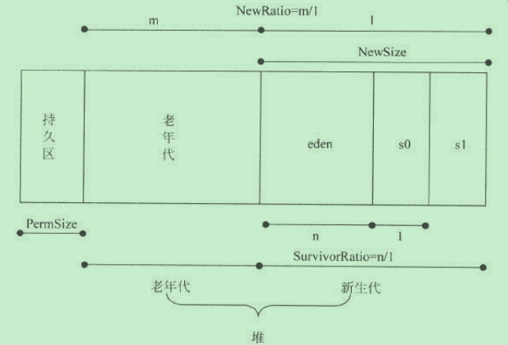

JVM内存分配参数
JVM内存分配参数总结
-Xms：设置Java应用程序启动时的初始堆大小
-Xmx：设置Java应用程序能获得的最大堆大小
-Xss：设置线程栈大小
-XX:MinHeapFreeRatio：设置空间最小空闲比例。当堆空间的空闲内存小于这个数值时，JVM会扩展堆空间
-XX:MaxHeapFreeRatio：设置空间最大空闲比例。当堆空间的空闲内存大于这个数值时，JVM会压缩栈空间，得到一个较小的堆。
-XX:NewSize：设置新生代大小
-XX:NewRatio：设置老年代和新生代的比例，它等于老年代大小除以新生代大小
-XX:SurviorRatio：新生代中eden区与survivior区的比例
-XX:MaxPermSize：设置最大的持久区大小
-XX:PermSize：设置永久区大小
-XX:TargetSurvivorRatio：设置survivo区的可使用率。当survivor区的空间使用率达到这个数值，会将对象送入老年代
各个参数的作用
堆分配参数的含义

设置Tomcat的JVM参数
加快Tomcat的启动速度
获取Tomcat启动时的GC信息
在catalina.bat中找到CATALINA_OPTS，设置成如下信息
1
set CATALINA_OPTS=-Xloggc:gc.log -XX:+PringGCDetails
启动Tomcat，发现在bin目录下生成文件gc.log
分析gc.log，设置合理参数
禁用显示GC
1
set CATALINA_OPTS=%CATALINA_OPTS% -XX:+DisableExplicitGC
-------------本文结束感谢您的阅读-------------